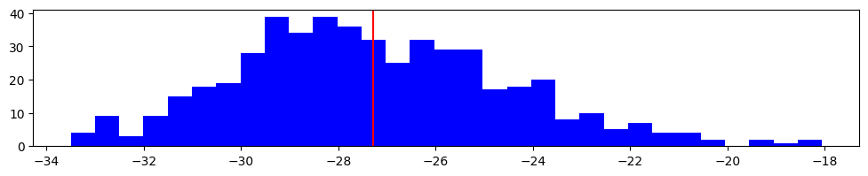
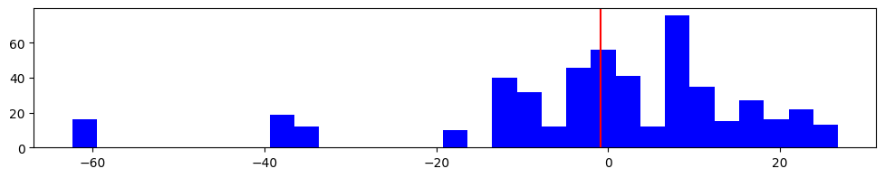
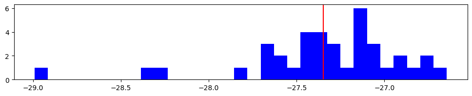

Error
Out of the books different ways of measearing the estimation error of an estimator are supported.
[1]:
from azcausal.core.parallelize import Joblib
from azcausal.data import CaliforniaProp99
from azcausal.estimators.panel.did import DID
panel = CaliforniaProp99().panel()
# initialize an estimator object, here difference in difference (did)
estimator = DID()
# run the estimator
result = estimator.fit(panel)
print(result.summary(percentage=False))
╭──────────────────────────────────────────────────────────────────────────────╮
| Panel |
| Time Periods: 31 (19/12) total (pre/post) |
| Units: 39 (38/1) total (contr/treat) |
├──────────────────────────────────────────────────────────────────────────────┤
| ATT |
| Effect: -27.35 |
| Observed: 60.35 |
| Counter Factual: 87.70 |
├──────────────────────────────────────────────────────────────────────────────┤
| Cumulative |
| Effect: -328.19 |
| Observed: 724.20 |
| Counter Factual: 1,052.39 |
╰──────────────────────────────────────────────────────────────────────────────╯
[2]:
import matplotlib.pyplot as plt
import numpy as np
def plot_error_distribution(runs):
plt.subplots(1, 1, figsize=(12,2))
x = np.array([result.effect.value for result in runs])
plt.hist(x, bins=31, color='blue')
plt.axvline(x.mean(), color='red')
return x.mean(), x.std()
Bootstrap
[3]:
from azcausal.core.error import Bootstrap
method = Bootstrap(n_samples=500)
se, runs = method.run(result)
# print out information about the estimate
print(result.summary(percentage=False))
plot_error_distribution(runs)
╭──────────────────────────────────────────────────────────────────────────────╮
| Panel |
| Time Periods: 31 (19/12) total (pre/post) |
| Units: 39 (38/1) total (contr/treat) |
├──────────────────────────────────────────────────────────────────────────────┤
| ATT |
| Effect (±SE): -27.35 (±2.7923) |
| Confidence Interval (95%): [-32.82 , -21.88] (-) |
| Observed: 60.35 |
| Counter Factual: 87.70 |
├──────────────────────────────────────────────────────────────────────────────┤
| Cumulative |
| Effect (±SE): -328.19 (±33.51) |
| Confidence Interval (95%): [-393.86 , -262.52] (-) |
| Observed: 724.20 |
| Counter Factual: 1,052.39 |
╰──────────────────────────────────────────────────────────────────────────────╯
[3]:
(-27.279344861963246, 2.792262747797979)

Placebo
[4]:
from azcausal.core.error import Placebo
method = Placebo(n_samples=500)
se, runs = method.run(result)
# print out information about the estimate
print(result.summary(percentage=False))
plot_error_distribution(runs)
╭──────────────────────────────────────────────────────────────────────────────╮
| Panel |
| Time Periods: 31 (19/12) total (pre/post) |
| Units: 39 (38/1) total (contr/treat) |
├──────────────────────────────────────────────────────────────────────────────┤
| ATT |
| Effect (±SE): -27.35 (±18.17) |
| Confidence Interval (95%): [-62.97 , 8.2711] (+/-) |
| Observed: 60.35 |
| Counter Factual: 87.70 |
├──────────────────────────────────────────────────────────────────────────────┤
| Cumulative |
| Effect (±SE): -328.19 (±218.09) |
| Confidence Interval (95%): [-755.63 , 99.25] (+/-) |
| Observed: 724.20 |
| Counter Factual: 1,052.39 |
╰──────────────────────────────────────────────────────────────────────────────╯
[4]:
(-0.8596241879653584, 18.17388989586121)

JackKnife
[5]:
from azcausal.core.error import JackKnife
method = JackKnife()
se, runs = method.run(result)
# print out information about the estimate
print(result.summary(percentage=False))
plot_error_distribution(runs)
╭──────────────────────────────────────────────────────────────────────────────╮
| Panel |
| Time Periods: 31 (19/12) total (pre/post) |
| Units: 39 (38/1) total (contr/treat) |
├──────────────────────────────────────────────────────────────────────────────┤
| ATT |
| Effect (±SE): -27.35 (±2.7671) |
| Confidence Interval (95%): [-32.77 , -21.93] (-) |
| Observed: 60.35 |
| Counter Factual: 87.70 |
├──────────────────────────────────────────────────────────────────────────────┤
| Cumulative |
| Effect (±SE): -328.19 (±33.21) |
| Confidence Interval (95%): [-393.27 , -263.11] (-) |
| Observed: 724.20 |
| Counter Factual: 1,052.39 |
╰──────────────────────────────────────────────────────────────────────────────╯
[5]:
(-27.34911108361494, 0.45491579154542355)
